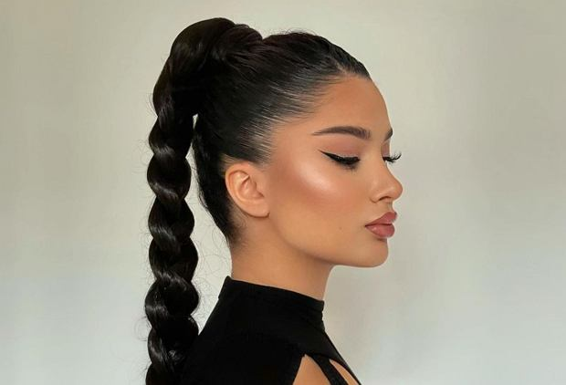

Najmodniejsze fryzury na 2022 rok. Jakie cięcia i kolory włosów wybierają gwiazdy i influencerki?
Modne fryzury 2022 zachwycają! Są pociągające, superkobiece, chwilami nostalgiczne. Wciąż królują cięcia typu bob i pixie oraz rockowy mullet hair rodem z lat 80. Jeśli masz włosy półdługie, ucieszy Cię trend na subtelne półupięcia, cieniowane fryzury czy luźne fale. Na jakie modne kolory warto się zdecydować w 2022 roku? W dziedzinie koloryzacji królują m.in. ogniste rude odcienie, chłodny blond oraz piękny bronde. Zerkamy więc na wybiegi, instagramowe konta gwiazd oraz it-girls i przedstawiamy wszystkie modne damskie fryzury na 2022 rok!
Modne fryzury 2022 dają spore możliwości i znajdzie się wśród nich coś dla każdego typu urody. Wśród gorących trendów znajdziemy m.in. warkocze, które wkraczają na wyższy stopień wtajemniczenia, grzywki, szczególnie te krótkie typu "baby bang" oraz fryzury typu bob w odświeżonych wariantach. W trendach na 2022 jest też kilka ciekawych fryzur i zaskakujących powrotów - na szczęście w nowej, ulepszonej wersji! Modne będzie chociażby "mullet hair" czyli fryzura "na czeskiego piłkarza" oraz pasemka typu "front blonde". Sprawdź nasze modne fryzury 2022 i zdecyduj, która najbardziej pasuje do Ciebie!
Modne fryzury 2022 - mullet, czyli krótko z przodu, dłużej z tyłu
Modne fryzury na 2022? Nie możemy otworzyć naszego zestawienia innym cięciem. "Mullet hair" to obecnie bardzo gorący trend. Pokochały go m.in. Rihanna, Miley Cyrus, Cara Delevigne, Zendaya i Natasza Urbańska. Chyba nie ma cięcia, które w świecie urody było niegdyś tak bardzo... niepożądane. Popularne w latach 80. i 90. wśród piłkarzy, ale też piosenkarzy (nosili je m.in. Rod Stewart czy Paul McCartney) teraz mullet hair modna fryzura 2022, która nie tylko przeżywa drugą młodość, ale wkracza również na salony!
Wszystko dzięki dopracowaniu i unowocześnieniu formy - pasma płynnie przechodzą z krótszych w dłuższe, nie ma już między nimi tak drastycznych różnic. Liczy się też faktura - na lekko kręconych, falowanych lub nieco potarganych włosach mullet sprawdza się świetnie! To odważna propozycja dla włosów długich oraz półdługich! "Mullet hair" to trochę bardziej rockowa wersja "shaggy hair", czyli niezwykle modnej fryzury, która królowała w 2021. W zeszłym sezonie była modna fryzura typu "shaggy hair", czyli trochę bardziej okiełznana wersja "mullet hair".

W sezonie wiosna/lato 2022 stawiamy na rudości. grę wchodzą zarówno ogniste rude odcienie, jak i te bardziej stonowane, połączone z brązem lub blondem. Szczególnie polecane są w tym sezonie rudości w odcieniach kasztanowych - ten wariant omówimy w dalszej części tekstu. Teraz skupmy się na tych ognistych pasmach, które królowały na głowach trensdsetterek już wiosną 2021 roku i królować będą jesienią i zimą 2021/2022 i w kolejnym roku. Trend na rudość wyznaczyły m.in siostry Gigi i Bella Hadid. Szukając inspiracji trudno nie trafić na piękne rude odcienie Jessiki Chastain, Amy Adams czy Elizabeth Olsen. Spośród polskich gwiazd niezwykłą rudą metamorfozę zaliczyła ostatnio Roma Gąsiorowska!